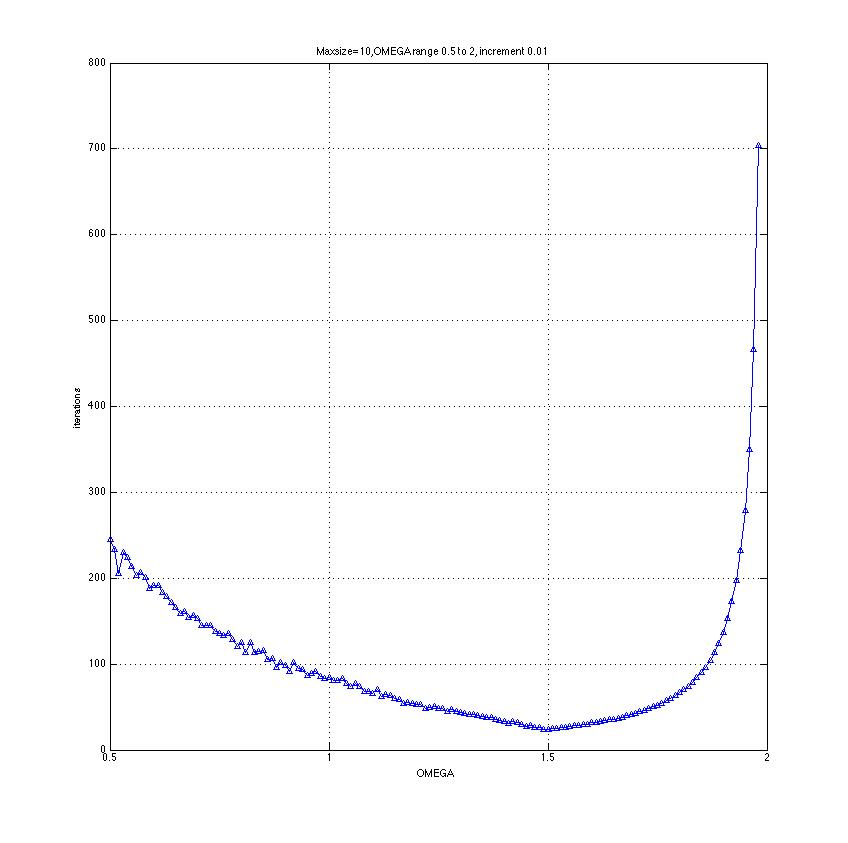
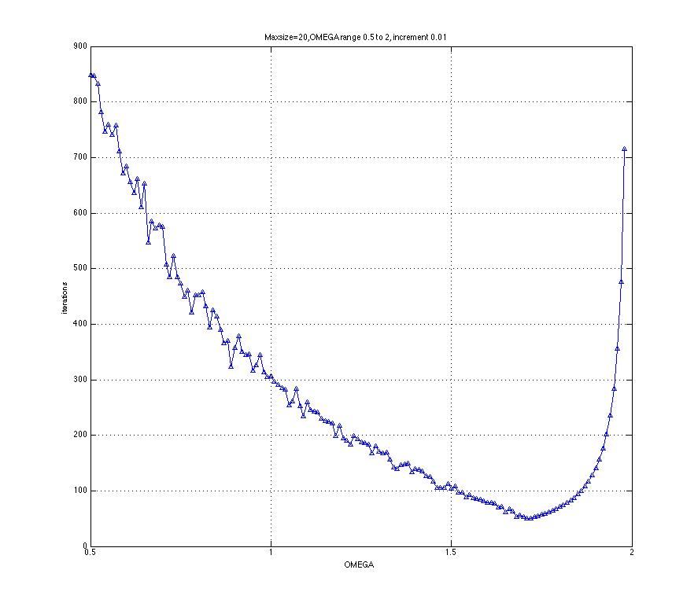
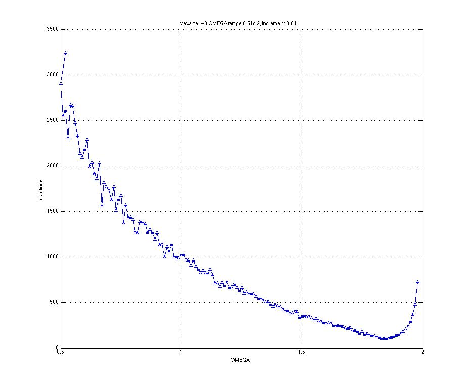
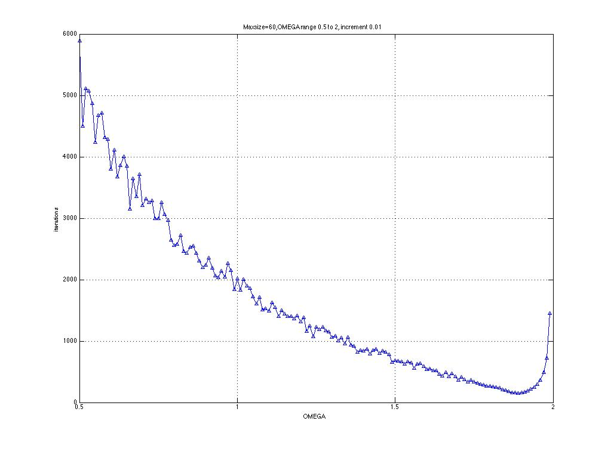
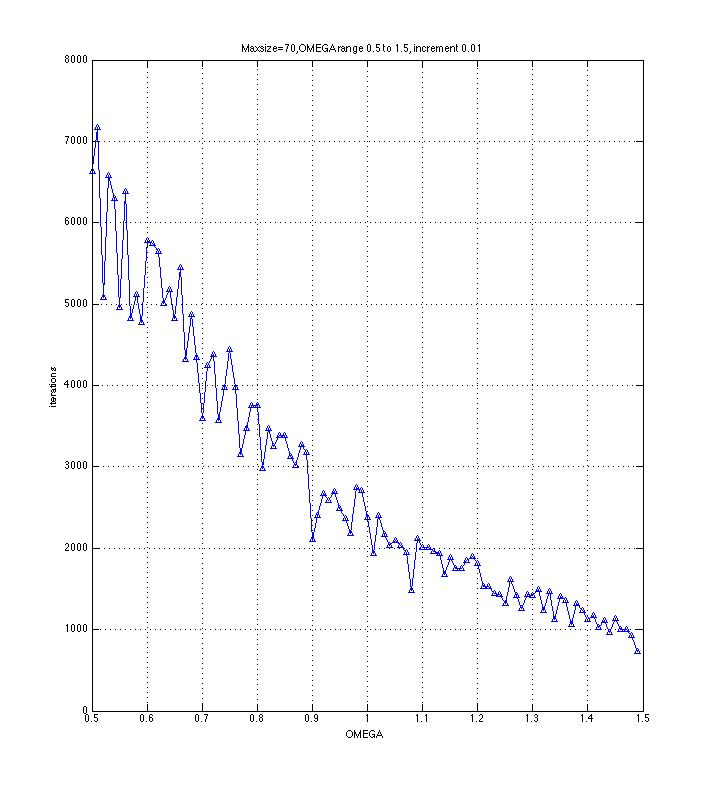
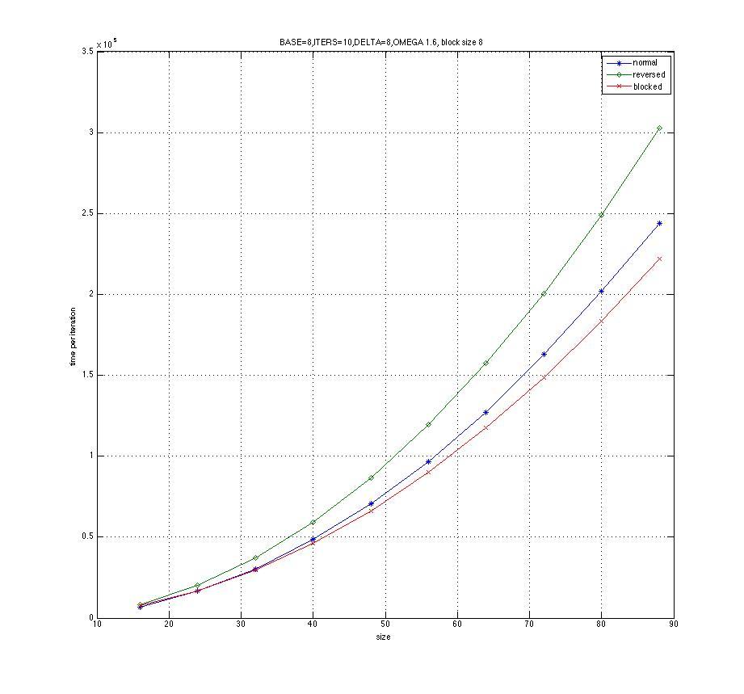
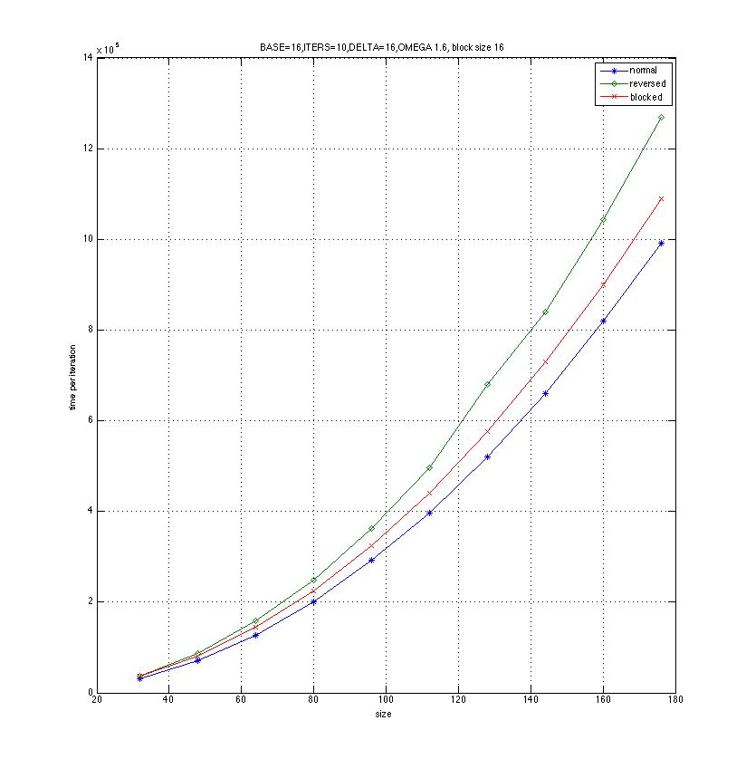
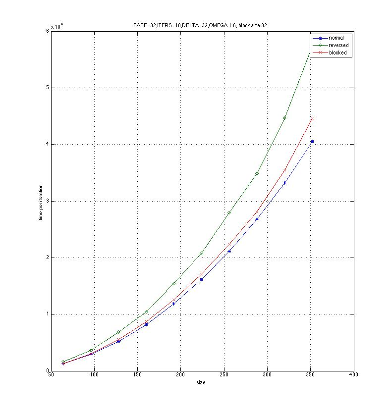

The overall shapes are like, a “U” shape where the optimal OMEGA falls into the nearly middle.
As the array size grows the optimal OMEGA moves slightly right meaning it becomes a little larger.
I tried different array sizes from as small as 10 to 70, which is larger than how much a cache can hold.
Size = 10:





It’s quite sensitive. As I observed, every change of 0.1 of OMEGA results in approximately 500 iterations more or less.
I think the initialization may affect it. Now we are using randomized initialization and the statistical difference of the numbers affects the iterations.
The plot are as follows:
base=8,iters=10,delta=8,block size=8:

base=16,iters=10,delta=16,block size=16:

base=32,iters=10,delta=32,block size=32:

Yes it’s surprising. The reversed one used least iterations but most time per iteration, while the blocking one used most iterations but least time per iteration. And the total time of the normal one is the least, while that of the blocking one is the most.
It’s easy to understand that since blocking takes advantage of cache thus it reduces time on a single iteration.